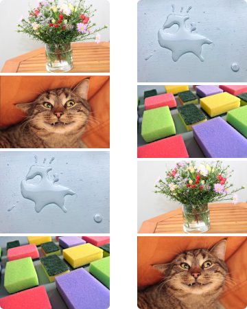

Флип - это своего рода капча, которая помогает определить, является ли пользователь человеком. В отличие от CAPTCHA, что означает «полностью автоматизированный общедоступный тест Тьюринга для различения компьютеров и людей» и обычно создается автоматизированной службой, флип должен быть создан человеком. И в отличие от обычной CAPTCHA, которая основана на распознавании объектов, решение переворота требует семантической интерпретации отношений между объектами.
Каждый флип содержит две истории в картинках. Один из них (левый или правый) представляет собой последовательность изображений, созданную человеком как содержательный рассказ. Другой создан тем же автором как нелогичный. Рассказы «читаются» сверху вниз. Решить флип - значит выбрать историю, которая кажется логичной. Если обе истории кажутся значимыми или бессмысленными, задача по-прежнему состоит в том, чтобы выбрать ту, которая кажется более логичной, чем другая, и, следовательно, ее предпочли бы другие люди.
Флип - это не тест на IQ, а проверка на здравый смысл. Не существует заранее определенных правильных ответов: правильный ответ будет выбран большинством людей.
Пример флипа: содержательная история (слева) и бессмысленная последовательность картинок (справа)